道路が崩れてから初めて一畑薬師に行きました。
更新日 : 2026/01/03
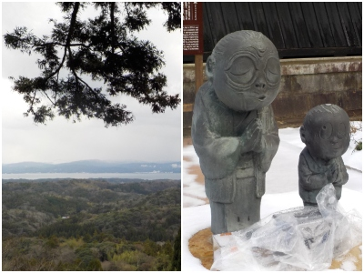
一畑薬師に向かう道路が崩れたので、いつもと違う道を通って行きました。
車のすれ違いが出来ない区間があると聞いていたので、人が少なそうな雪がちらつく中行きました。
のんのんばあの像の前にある賽銭箱は、雪で濡れないようにビニール袋で守られていました。
人が少なくてのんびり見れたんですが、正月に活気がないのは寂しいですね。早く道が直るといいですね。
島根県出雲市小境町803番地
更新日 : 2026/01/03

一畑薬師に向かう道路が崩れたので、いつもと違う道を通って行きました。
車のすれ違いが出来ない区間があると聞いていたので、人が少なそうな雪がちらつく中行きました。
のんのんばあの像の前にある賽銭箱は、雪で濡れないようにビニール袋で守られていました。
人が少なくてのんびり見れたんですが、正月に活気がないのは寂しいですね。早く道が直るといいですね。
更新日 : 2022/01/01
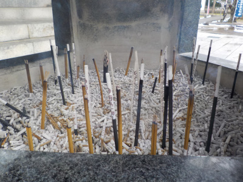
いつものようにお線香を立てました。
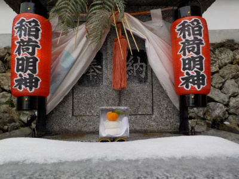
いろんなところに鏡餅が供えてありました。手作りで、それぞれに個性がありました。
門松も手作りみたいで色んなタイプのものがありました。
色んな考え方があるとは思いますが、販売している量産型のものよりこっちの方が好きだなと思いました。
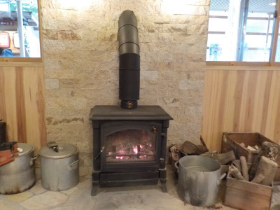
おみくじとかお守りを販売している建物に薪ストーブがありました。
ここだけなんか雰囲気が違いました。
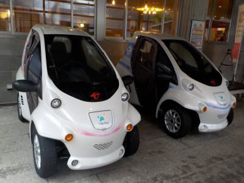
この電気自動車は何？展示品？
小さくて運転しやすそう。
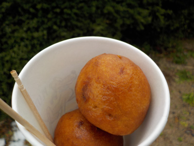
帰りに揚げ饅頭を買って食べました。1個100円。紙コップって便利ですね。
餡子たっぷりで甘くて美味しかったです。
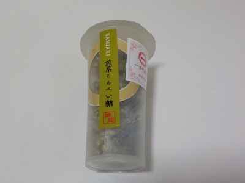
お土産に煎茶こんぺい糖を買って帰りました。400円。高級ですね。
抹茶じゃなくて煎茶です。煎茶の方がお茶っぽくていい味な気がしました。
更新日 : 2020/12/27
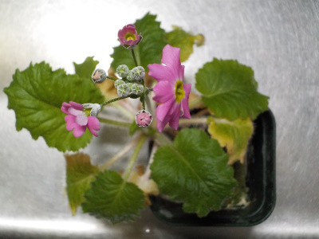
一畑薬師で引いたおみくじに付いていた種を育てたら花が咲きました。
なかなか大きくならないと思っていましたが、冬の花だったんですね。
何て名前の花がわかりませんが、ちゃんと育って花が咲いてよかった。
おみくじの花を咲かせたので、何かいいことがありそうな気分です。
更新日 : 2020/01/26
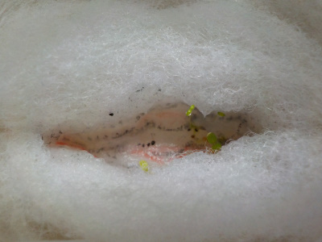
ウールマットにおみくじ2個分を入れ、水をあげて育てています。
とっても小さい芽が出ました
更新日 : 2020/01/02
去年のおみくじを返して、今年のおみくじを引きに行きました。
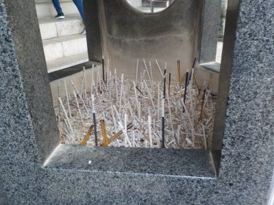
線香あげました。
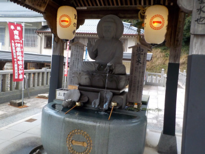
お水をいただきました。
今年のおみくじは花の種付きのネズミのおみくじにしました。
種を植えて運を育てるそうです。
更新日 : 2019/01/01
寒かったですが、雨も風もなかったので除夜の鐘を撞きに出かけました。
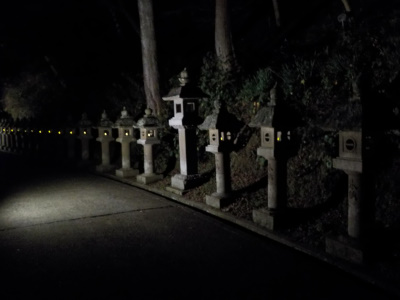
暗くて静かな道を歩いて本堂に向かいます。
行く年、来る年みたいな気分でした。
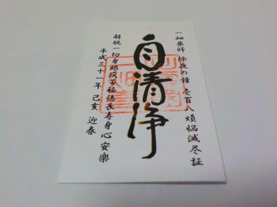
受付で、気持ちぶんのお金をお供えしてこの紙をもらいました。チケットみたいな感じですね。
硬貨がいっぱいあったので、既に沢山の人が除夜の鐘を撞いたみたいでした。
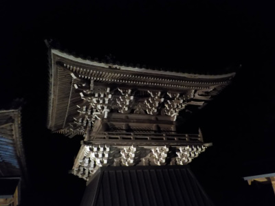
この建物の中に鐘がありました。
力を込めて鐘をならしたら、なんかスッキリしました。
気分が良くなっていいイベントですね。来年も除夜の鐘を撞きたいって思いました。
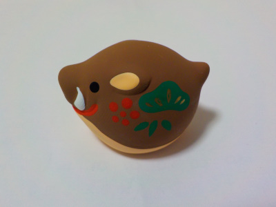
干支のおみくじを買いました。
縁起ものとか占いってあまり関心がなかったんですが、そうゆうのも楽しめる人になりたいと思って買いました。
置物も、中に入ってるおみくじも大切にしたいと思います。
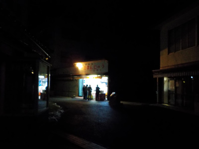
深夜ですがおまんじゅう屋さんが営業していました。
あつあつのお饅頭を食べて帰りました。
更新日 : 2017/11/11
一畑薬師でライトアップのイベントがあったので見に行きました。
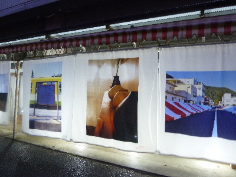
薬師手前のお店では、お洒落な写真の幕がライトアップされていました。
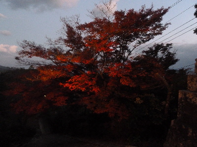
ライトアップされた紅葉です。この木が一番赤かったかな。
まだ緑の葉の紅葉が多かったので、見頃は来週くらいかな。
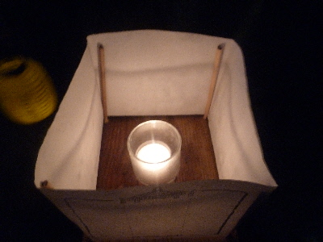
行った時間に丁度「お浄めの火・点灯式」がやっていました。
私も1つろうそくをもらって、灯篭に火を入れました。
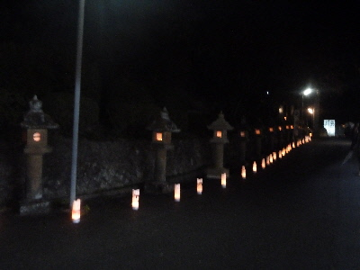
場所が違いますが、灯篭はこんな感じです。
108人で108個の灯篭に火を入れてお祈りをしました。
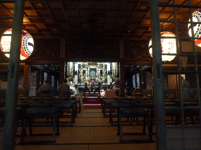
お祈りの次はお堂で尺八の奉納演奏がありました。
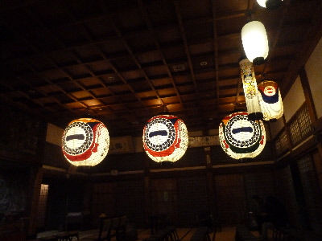
御堂の天上には大きな提灯がありました。
日常とは違う雰囲気がしました。夜のお寺は昼とは違いますね。
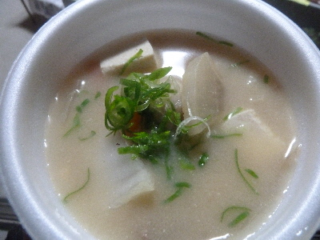
シシ汁のふるまいをいただきました。
生姜が効いてて美味しかったです。猪の赤身も味わい深くて美味しかったです。
後、お土産屋さんで買った一畑まんじゅうの黄な粉も美味しかったです。
今日のイベントはいろいろあって楽しかったです。またイベントがあったら一畑薬師に行こうと思いました。
更新日 : 2015/5/14
出雲市小境町の一畑寺に行ってきました。
駐車場とお寺の間にある商店街で、名物の一畑まんじゅうがあちこちで販売してまっした。店先で作りながら販売している所だと、出来たての美味しいおまんじゅうが食べれます。
お店によってはかぼちゃまんじゅうやきなこまんじゅうも売ってました。おまんじゅうの外側の生地に味がついてるんですけど、素材の風味がしっかりでてて美味しかったです。
今日はなかったですけど、ごままんじゅうやブルーベリーまんじゅうもあるようで、次ぎに行ったときは是非食べてみたいです。